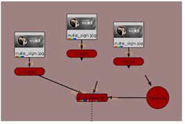

Open topic with navigation
Making a Scene
We mentioned earlier the Scene node creates a place where multiple objects may be seen by the camera and the render node. If you only have a single object, you don’t need a Scene node, but where’s the fun in that? Scene nodes make it possible to really tap into Nuke’s ability to handle huge amounts of 3D information, and you should know how to use it.
To Set Up a Scene
|
1.
|
Inside the “Setting Up a 3D System” node tree, drag a selection around the nuke_sign.jpg node and the Card1 node to select them. |

|
2.
|
Press Ctrl+C (Mac users press Cmd+C) to copy the selected nodes or choose Edit > Copy from the right-click menu. |
|
3.
|
Press Ctrl+V (Mac users press Cmd+V) or choose Edit > Paste to insert a copy of the nodes. Press Ctrl+V or Cmd+V again to insert a second copy, and then arrange the nodes as shown below. |

|
4.
|
There are multiple cards now, and you need a Scene node to create a space where the rendering node can see all cards at once. |
|
5.
|
Click on an empty space in the Node Graph to deselect all nodes. Right-click and choose 3D > Scene to insert the “Scene1” node. |
|
6.
|
Drag the Scene1 node onto the obj/scn connector to insert the Scene1 node between Card1 and ScanlineRender1. |
|
7.
|
Connect the obj/scn connector from the ScanlineRender1 node to the Scene1 node. Connect each Card node to the Scene1 node. |

|
8.
|
Double-click on the Card1 node to open its control panel. In the Viewer, you’ll see the transform handles for the first card. |
|
9.
|
Move and rotate the card to a different position. For this example, it doesn’t matter where you place it. |
|
10.
|
Open the control panel for Card2 and move its card to a different place in the scene. |
|
11.
|
Open the Card3 control panel and move that card, also. |

You could switch to the 2D view to see the result, but why not just look through the camera? Next to the view dropdown menu, you see the button that locks the 3D view to the camera.
|
12.
|
From the view dropdown menu, choose 3D (V) to switch to a 3D perspective view. Then click the “lock view to 3D camera” button. |

|
13.
|
Turn off the “lock 3D view to selected camera” button. You won’t need it during the rest of this tutorial. |